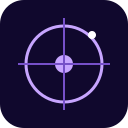

علوم الفلك والفضاء
نحوّل الأسئلة الكبيرة إلى معرفة قريبة وتجربة حيّة.

معرض بغداد للفلكتنظيم فريق X ASTRONOMY سجّل حضوركمن بغداد… نحو الكون
مساحة تفاعلية يلتقي فيها فضولنا بالعلم، ونكتشف فيها أن الكون أوسع وأقرب مما نتخيّل.
بإشراف وتنظيم X ASTRONOMY
01 الحكاية
من قلب بغداد، نفتح نافذة على عالم الفلك والفضاء لكل شخص يسأل: ماذا يوجد هناك؟
معرض بغداد للفلك تجربة علمية تفاعلية تجمع المعرفة بالتجربة، وتعرّف الشباب والأطفال إلى علوم الفلك والفضاء، والذكاء الاصطناعي، والفرق العلمية التي تصنع مستقبلها اليوم.
اكتشف ما ينتظركنقرّب علوم الفضاء إلى مجتمعنا، ونمنح الجيل القادم مساحةً ليرى أبعد.
FROM BAGHDAD, TOWARD THE COSMOSنحوّل الأسئلة الكبيرة إلى معرفة قريبة وتجربة حيّة.
نلتقي عند حدود العلم والتقنية والابتكار.
نعرّف بجهود الفرق الفلكية والعلمية العراقية.
02 عِش العلم
جرّب، اسأل، راقب — واكتشف الكون بطريقتك.
اقترب من الأجرام السماوية في تجربة رصد فلكية حية.
اكتشف الروبوتات والأقمار المكعبة عن قرب.
ألعاب لوحية بسيطة وتجارب VR تفتح آفاقاً جديدة.
كلمات من فريق X وفريق Alpha والجهات والجامعات والفرق.
مساحة للفرق المشاركة وبوثات المطاعم، ضمن يومين من الاكتشاف والتواصل.
03 البرنامج والأجندة
محاور علمية وجلسات وعروض تفاعلية، مجتمعةً في برنامج واحد يبدأ من بغداد ويمتد إلى الفضاء.
تفاصيل الأيام والأوقات
ستُعلن لاحقاً
مسارات تشرح الكون وتربط الرصد بالبيانات والتجربة.
السماء، الأجرام السماوية، النجوم، الكواكب والمجرات.
البعثات الفضائية والتقنيات المستخدمة لفهم الكون.
التلسكوبات وتقنيات الرصد والتصوير الفلكي.
الكواكب خارج المجموعة الشمسية والبحث عن عوالم أخرى.
مشاركة الجمهور في المشروعات البحثية وتحليل البيانات العلمية.
رصد الكويكبات والبحث العلمي المعتمد على البيانات.
تحليل البيانات وتطبيقات الذكاء الاصطناعي في علوم الفلك.
علوم المناخ وتحليل البيانات البيئية وعلاقتها بالملاحظة العلمية.
الفرص التعليمية والتطوعية والمسارات للطلبة والمهتمين.
شرح مبسّط وتفاعلي لمفاهيم الكون.
الأجندة معروضة بلا تحديد أيام أو أوقات.
تابعوا حسابنا على إنستغرام لمعرفة آخر المستجدات وتفاصيل البرنامج.
04 شبكة من المعرفة
جهات وشركاء يجمعهم الإيمان بأن العلم مساحة مشتركة، وأن الفضول بداية كل اكتشاف.
05 فريق المعرض
تعرّفوا إلى أعضاء الفريق التنظيمي والفرق التي تعمل خلف الكواليس.
71عضواً في الفريق التنظيمي
تعرّفوا إلى أعضاء الفريق التنظيمي — الصور والأسماء والفرق والمناصب.
قيادة المعرض
التنظيم والإدارة
فرق تعمل معاً
من الإدارة والعمليات إلى الفرق التخصصية وبقية المتطوعين.
06 خلف الكواليس
لقطات من التحضيرات والعمل الذي جمع فريق المعرض — الصور من مجلد الكواليس.
جارٍ تحميل الصور…
07 مكانك بيننا
اختر طريقة مشاركتك — زائراً أو ضمن فريق فلكي. ننتظركم قريباً.
تُفتح الاستمارات في صفحة جديدة. تأكد من اختيار المسار المناسب لك.